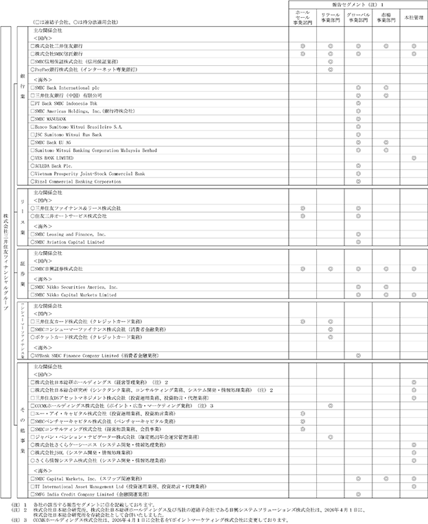
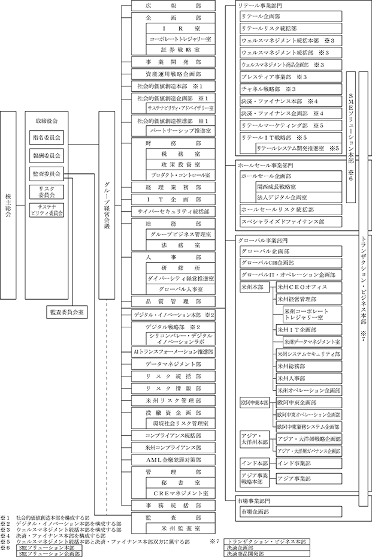

（注）１ 連結自己資本比率は、（期末純資産の部合計－期末新株予約権－期末非支配株主持分）を期末資産の部合計で除して算出しております。
２ 連結自己資本利益率は、親会社株主に帰属する当期純利益を、新株予約権及び非支配株主持分控除後の期中平均連結純資産額で除して算出しております。
３ 当社は、2024年９月30日を基準日、10月１日を効力発生日として、普通株式１株につき３株の割合で株式分割を実施しております。2023年度の期首に当該株式分割が行われたと仮定して１株当たり純資産額、１株当たり当期純利益及び潜在株式調整後１株当たり当期純利益を算定しております。
（注）１ 第24期中間配当についての取締役会決議は2025年11月14日に行いました。2026年３月期の１株当たり配当額157円のうち、期末配当額79円については、2026年６月26日開催予定の定時株主総会の決議事項になっております。
２ 自己資本比率は、（期末純資産合計－期末新株予約権）を期末資産合計で除して算出しております。
３ 自己資本利益率は、当期純利益を新株予約権控除後の期中平均純資産額で除して算出しております。
４ 配当性向は、当期普通株式配当金総額を、当期純利益で除して算出しております。
５ 最高株価及び最低株価は、第21期より東京証券取引所プライム市場におけるものであり、それ以前については東京証券取引所市場第一部におけるものであります。
６ 当社は、2024年９月30日を基準日、10月１日を効力発生日として、普通株式１株につき３株の割合で株式分割を実施しております。第22期（2024年３月）の期首に当該株式分割が行われたと仮定して１株当たり純資産額、１株当たり配当額、１株当たり当期純利益及び潜在株式調整後１株当たり当期純利益を算定しております。また、第23期（2025年３月）の株価については株式分割後の最高株価及び最低株価を記載しており、( )内に株式分割前の最高株価及び最低株価を記載しております。
当社グループ（当社及び当社の関係会社（うち連結子会社184社、持分法適用会社252社））は、銀行業務を中心に、リース業務、証券業務、コンシューマーファイナンス業務、システム開発・情報処理業務などの金融サービスに係る事業を行っております。
各事業部門（「第５ 経理の状況 １ 連結財務諸表等 (1) 連結財務諸表 注記事項 (セグメント情報等)」に掲げる「セグメント情報」の区分と同一）における当社及び当社の関係会社の位置付け等を事業の系統図によって示すと次のとおりであります。
なお、当社は、有価証券の取引等の規制に関する内閣府令第49条第２項に規定する特定上場会社等に該当しております。これにより、インサイダー取引規制の重要事実の軽微基準については連結ベースの数値に基づいて判断することとなります。

(2026年６月19日現在)
